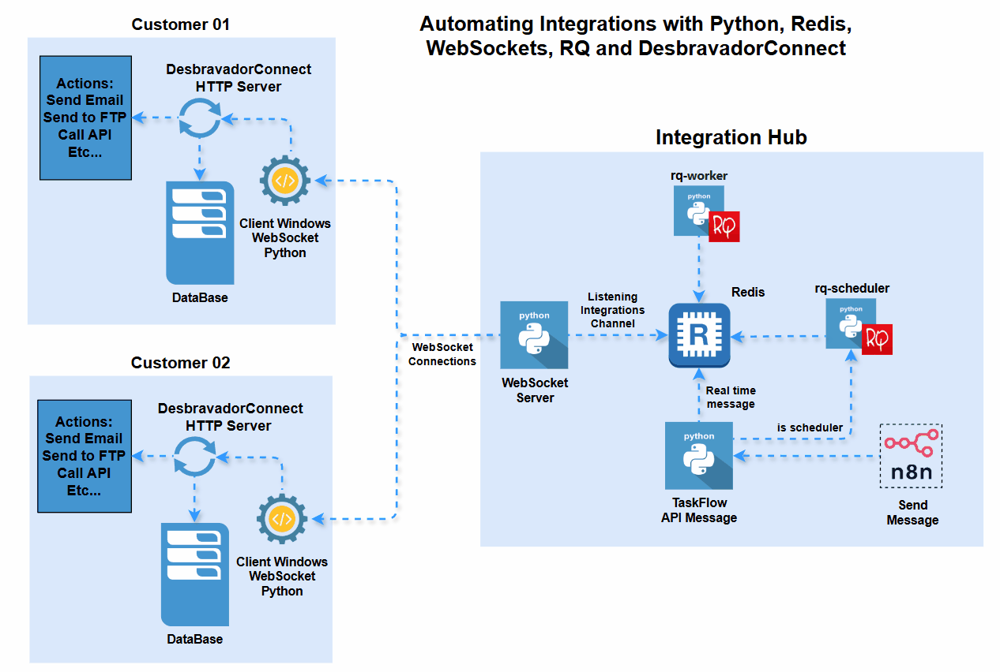

Automatizando Integrações através de WebSockets com Python, Redis, e DesbravadorConnect
Desenvolvi esta arquitetura para automatizar integrações através de mensageria,
utilizando Python, Redis, WebSockets, RQ e DesbravadorConnect, com o objetivo de resolver
um grande desafio do meu dia a dia: comandar tarefas distribuídas em clientes espalhados por meio
de um serviço centralizado, permitindo o processamento de tarefas agendadas e em tempo real.
As ferramentas utilizadas foram:
- Python
- Redis
- WebSockets
- RQ
- DesbravadorConnect
𝗖Â𝗡𝗖𝗘𝗥 (𝗖𝗔𝗡𝗖𝗥𝗢): 𝗨𝗠𝗔 𝗔𝗡Á𝗟𝗜𝗦𝗘 𝗘𝗩𝗢𝗟𝗨𝗧𝗜𝗩𝗔 𝗡𝗢 𝗕𝗥𝗔𝗦𝗜𝗟 – 𝗣𝗿𝗼𝗷𝗲𝘁𝗼 𝗱𝗲 𝗕𝘂𝘀𝗶𝗻𝗲𝘀𝘀 𝗜𝗻𝘁𝗲𝗹𝗹𝗶𝗴𝗲𝗻𝗰𝗲 𝗻𝗼 𝗠𝗲𝘀𝘁𝗿𝗮𝗱𝗼 𝗲𝗺 𝗖𝗶ê𝗻𝗰𝗶𝗮 𝗱𝗲 𝗗𝗮𝗱𝗼𝘀
Durante o Mestrado em Ciência de Dados no Politécnico de Leiria, desenvolvi em cnjunto com dois colegas,
um projeto de Business Intelligence, focado em um dos temas mais sensíveis da atualidade: o câncer (cancro) no Brasil.
🎯 O objetivo foi transformar dados brutos sobre incidência, gênero, idade, tratamentos e características
demográficas em insights estratégicos, capazes de apoiar investigadores,
decisores políticos e profissionais de saúde na tomada de decisões baseadas em dados.
📊 Trabalhamos com dados extraídos do DATASUS, garantindo uma base sólida e aberta à população.
A partir disso, aplicamos técnicas de modelagem de dados, ETL, análises multidimensionais e storytelling visual,
utilizando Python, MS SQL Server, SSIS e Power BI para criar dashboards interativos e informativos.
As ferramentas utilizadas foram:
- Python
- MS SQL Server, SSIS
- Power BI, Dax, M, Power Query

Aumento de clientes no programa de Fidelidade de uma Companhia Aérea.
Eu usei Python, Estatística e técnicas de Machine Learning para desenvolver um sistema
preditivo capaz de avaliar a probabilidade de um cliente específico adquirir um
determinado plano de fidelidade e impulsionar as estratégias de marketing de uma
companhia aérea. E o resultado dessa solução, caso fosse
implementada, resultaria em aumento de passageiros em seu programa de fidelidade.
As ferramentas utilizadas foram:
- Git, Gitlab e Github.
- Python, Pandas, Sklearn e Nupy.
- Google Colab.
- SQLite
- Gradio for Visualization

Identificação de imóveis para compra e revenda a fim de maximizar o lucro
Identificação de imóveis abaixo do preço médio de venda e definição do preço ideal de
revenda, a partir de uma análise exploratória de dados em Python.
As ferramentas utilizadas foram:
- Python, Pandas, Numpy e Seaborn.
- Anaconda, Pycharm e Jupyter Notebook.
- Mapas interativos com Plotly e Folium.
- Heroku Cloud.
- Streamlit Python framework web.